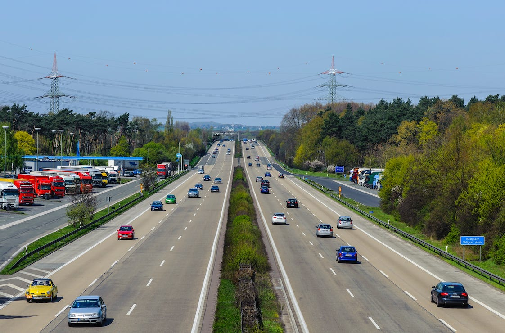

Puffer sichern Flow
Sein Gehalt wert ist, wer vor Arbeit kaum in den Schlaf kommt. Wer unter Volllast arbeitet, tut, so viel er kann — und nicht weniger darf erwartet werden, damit der Laden läuft. Oder so ähnlich ist das allgemeine Verständnis davon, wie eine Arbeitsplanung aussehen sollte.
Doch das ist ein fundamentales Missverständnis! Vollauslastung, gar Überlastung sorgt für Unzuverlässigkeit, Verschwendung, Verzögerungen und Qualitätsverluste. An all dem ist kein Kunde interessiert.
Die dahinter stehende Fehlannahme ist eine positive Korrelation zwischen geplanter Auslastung und Produktivität: je mehr Auslastung desto höher die Produktivität (bzw. Effizienz). Oder kurz: mehr rein führt stets zu mehr raus.
Theorie trifft auf reales Leben
Leider ist die Welt nicht so ideal. Denn diese Korrelation gilt nur, solange jeder Plan zu 100% umgesetzt werden kann:
- für alle Aufgaben wird nur der veranschlagte Aufwand gebraucht;
- alle Ressourcen oder Vorleistungen stehen pünktlich zur Verfügung, wenn sie bei der Abarbeitung von Aufgaben benötigt werden; es entstehen also keine Wartezeiten.
Die Realität sieht jedoch anders aus. Sehr anders. In ihr gilt: alles dauert nicht nur so lange wie geschätzt — es dauert meistens länger. Da helfen auch keine Puffer, die mit “eingepreist” werden bei Aufwandsschätzungen.
Warum dauern die Erledigung von Aufgaben meistens länger als gedacht? Selbst Routineaufgaben sind davon nicht ausgenommen. Der Mechanismus ist im Groben dieser:
- Eine Aufgabe wird geschätzt und eingeplant. Sie hat nun einen zeitlichen Aufwand und vielleicht auch eine Frist, bis zu der sie erledigt sein sollte.
- Mit der Aufgabe wird entweder so früh wie möglich begonnen — so wie mit allen anderen —, so dass es zu Multi-Tasking kommt. Mehrere Aufgaben gleichzeitig sind in Arbeit, was den Fortschritt an jeder einzelnen per se verringert durch Umschaltaufwände. Schon dadurch verlängert sich die Zeit bis zur Erledigung; außerdem ist es schwerer, den Überblick über den Fortschritt mehrerer Aufgaben zu behalten. Die Priorisierung wird suboptimal.
- Oder mit Aufgaben wir so knapp wie möglich vor Fristablauf begonnen. Das aber natürlich ist keine Garantie dafür, dass es kein Multi-Tasking gibt. Wenn jetzt etwas verrutscht, ist die Aufgabe sofort im Verzug. Dann setzt Hektik ein, zur Erledigung tritt Zusatzaufwand für Konfliktlösungen.
- Aber auch unabhängig von Multi-Tasking werden Aufgaben nicht einfach in der geschätzten Zeit erledigt. Denn geschätzt wird vor allem Aufwand — d.h. die Zeit, die tatsächlich aufgewandt werden muss — und nicht Dauer — d.h. die Zeit, die von Beginn bis Erledigung vergeht. Wartezeiten, die entstehen durch Abhängigkeiten von internen oder gar externen Ressourcen, sind meistens nicht “eingepreist” in Schätzungen. Dazu kommen optimistische Annahmen, was das eigene Verständnis und die Fähigkeiten angeht, Aufgaben zu erledigen. Ein Mangel an Klarheit oder Kompetenz führt jedoch in unerwartete weitere Abhängigkeiten.
Unerwartetes wie Unterbrechungen und vor allem Multi-Tasking aka mehr als eine Aufgabe als Work In Progress (WIP) torpedieren auch den schönsten Plan.
„[T]oo much WIP means that work arrives faster than you can complete it. It’s all the work you’ve started but not yet finished—all the partially completed work. Because […] too Much WIP scatters our attention across multiple things, it steals our time, our money, and our ability to deliver high quality work. This results in others having to wait longer than they’d like to get what they want, and you losing money due to the delay. […] Too Much WIP steals time away from getting things done sooner rather than later. And because we cram to finish, the result is not the beautiful, masterly crafted product we want.“, Dominica DeGrandis, Making Work Visible
Aufgaben dauern immer länger als wir schätzen
Im Ergebnis dauert die Erledigung von Aufgaben — und das ist relevant für die Empfänger des Ergebnisses — immer länger, als der geschätzte Aufwand. Mal wenig länger, mal viel länger. Eine Unterschreitung der Schätzung hingegen ist quasi nie zu beobachten. Oder wenn es sie geben sollte… dann existiert kein Anreiz, sie zu kommunizieren. Denn wer heute schneller als seine Schätzung ist, wird morgen bei der nächsten Schätzung zu einem niedrigeren Wert gedrängt. Diesem Druck will sich niemand aussetzen.
Selbst die gutwilligsten Mitarbeiter können solche Abweichungen vom Plan nicht kompensieren. Es liegt in der Natur der Arbeit, solange die nicht hochgradig repetitiv, also quasi am Fließband stattfindet. Bekannte Unbekannte, unbekannte Unbekannte, Fluktuation in der Belegschaft durch Krankheit oder Kündigung, Unterbrechungen durchs Management oder Noteinsätze für einen Kunden… dies und vieles mehr sorgt für Variationen in der Erledigungsdauer. Dafür konkrete Puffer für jede Aufgabe einzuplanen ist erstens unmöglich und zweitens Verschwendung.
Es hilft also nichts: Eine Planung muss dieser Realität ins Auge sehen. Das bedeutet, Puffer dürfen nicht individuell “eingepreist” werden, sondern sind auf Systemebene pauschal vorzusehen. Genau das geschieht durch geplante Unterlast.
Am Ende jedes Tages soll jeder Mitarbeiter gern seine volle Arbeitszeit konzentriert auf Aufgaben verwandt haben. Am Ende jedes Tages war die Auslastung dann vielleicht 100%.
Verplant werden hingegen nicht 100%; vor Beginn des Tages wird die Auslastung nicht auf 100% gesetzt. Verplant wird umso weniger, je weiter in der Zukunft ein Tag liegt. Am Vortag 90% des nächsten Tages zu verplanen, mag ok sein; die Variationen, die eintreten können, sind oft recht gut abschätzbar. Doch in der Vorwoche, gar im Vormonat oder noch früher sollten höchstens 80% oder zunächst sogar vielleicht nur 60% verplant werden.
Praxisbeispiel Autobahn
Autobahnen machen diesen Gedankengang deutlich: Der Durchsatz, der Verkehrsfluss auf Autobahnen ist nicht am höchsten, wenn die Autos Stoßstange an Stoßstange fahren, also die komplette Platzkapazität der Autobahn ausnutzen. 100% Auslastung ist kein Rezept für schnelles Vorwärtskommen. Vielmehr bedeutet 100% Auslastung Stillstand im Stau. Die optimale flächenmäßige Auslastung von Autobahnen ist von der Variationsbreite der Geschwindigkeiten der Fahrzeuge abhängig. Wenn alle absolut konstant 100km/h oder 150km/h fahren würden, wären 100% Auslastung möglich; doch das ist irreal. Fahrzeuge können/dürfen unterschiedlich schnell fahren, Fahrer fahren aus persönlichen Gründen unterschiedlich schnell, Auf-/Abfahrten zwingen zu Geschwindigkeitsveränderungen, Unvorhergesehenes zwingt zu plötzlicher Reaktion… Die maximale Auslastung für fließenden Verkehr ist also abhängig von vielen Faktoren; sie liegt deutlich unter 100%.

Und genau dasselbe gilt für die Arbeit im Büro, in Projekten. Eine Planung mit Volllast ist zum Scheitern verdammt. Die Unzufriedenheit des Kunden ist vorprogrammiert.
Für die Profitabilität dürfen also nicht 100% Auslastung angenommen werden; lediglich z.B. 60% müssen reichen. Das ist kein exakter Wert, sondern eine ungefähre Marke, die sich aus Beobachtungen in der Praxis ergeben hat.
Mit 60% geplanter Kapazität genug Umsatz machen, um die Kosten der Organisation zu decken und auch noch etwas übrig zu lassen: das muss das Ziel sein. Es mag irreal klingen, doch gegen die “Naturgesetze” überlasteter Arbeit wehrt man sich vergebens.
Was ist der Preis von 100% Auslastung?
Wenn heute nur 100% geplante Auslastung Profitabilität garantieren, dann wird ein versteckter Preis gezahlt, z.B.
- die Ressource Mitarbeiter wird verschlissen; Unzufriedenheit und Fluktuation kosten Geld;
- Innovation findet nicht statt, weil dafür nie Zeit ist; die Wettbewerbsfähigkeit nimmt ab;
- notwendige Veränderungen werden verschleppt; die Produktivität fällt weiter ab gegenüber dem, was möglich ist und andere womöglich schon können;
- Unzuverlässigkeit lässt Kunden abwandern und zehrt allemal am Budget und an den Nerven.
Es mag eine bittere Wahrheit sein, aber sie zu leugnen macht auf Dauer nicht froh. Die meisten Organisationen überlasten sich massiv und führen sich damit selbst in Stress und Konflikte. Besser ist es, den Stier bei den Hörnern zu packen und von vornherein weniger einzulasten. Keine Sorge, am Ende werden auch dann keine Däumchen gedreht. Doch die Produktivität steigt und die Zufriedenheit ebenfalls.
Dieser Artikel erschien zum ersten Mal in meinem Newsletter bei Substack hier im Juni 2022. Dort finden Sie auch weitere Artikel und können den Newsletter per E-Mail abonnieren.
Weitere Artikel

KI als Copilot für die Assistenz
KI in Form von ChatGPT & Co sind hervorragende neue Werkzeuge im Office-Alltag, um produktiver und ja, auch kreativer, zu werden. Neugier statt Angst ist angezeigt im Umgang mit diesen Werkzeugen, die wie andere Werkzeuge auch …

Veränderung braucht Gewohnheit
Sowohl im Berufs-als auch im Privatleben sind wir ständig im Veränderungsmodus. Manche Veränderungen wollen wir umsetzen, manche müssen wir mitmachen. Wir alles wissen, dass Veränderung nie leicht sind und je länger wir etwas auf …